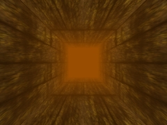

|
第41課 |
 |
|  |
體積霧氣
把霧坐標綁定到頂點，你可以在霧中漫遊，體驗一下吧。 |
|
 |
|
這一課我們將介紹體積霧，為了運行這個程序，你的顯卡必須支持擴展"GL_EXT_fot_coord"。 |
 |
#include <windows.h>
#include <gl\gl.h>
#include <gl\glu.h>
#include <math.h>
#include "NeHeGL.h"
#pragma comment( lib, "opengl32.lib" )
#pragma comment( lib, "glu32.lib" )
GL_Window* g_window;
Keys* g_keys;
 |
下面的代碼設置霧的顏色和攝像機在Z方向的深度 |
|
GLfloat fogColor[4] = {0.6f, 0.3f, 0.0f, 1.0f}; // 霧的顏色
GLfloat camz; // 攝像機在Z方向的深度
.gif) |
下面變量GL_FOG_COORDINATE_SOURCE_EXT和GL_FOG_COORDINATE_EXT具有初值，他們在glext.h文件中被定義，這裡我們必須感謝Lev
Povalahev，它創建了這個文件。如果你想編譯你的代碼，你必須設置這個值。
為了使用glFogCoordfExt，我們需要定義這個函數的指針，並在程序運行時把它指向顯卡中的函數。 |
|
// 使用FogCoordfEXT它需要的變量
#define GL_FOG_COORDINATE_SOURCE_EXT 0x8450 // 從GLEXT.H得到的值
#define GL_FOG_COORDINATE_EXT 0x8451
typedef void (APIENTRY * PFNGLFOGCOORDFEXTPROC) (GLfloat coord); // 聲明霧坐標函數的原形
PFNGLFOGCOORDFEXTPROC glFogCoordfEXT = NULL; // 設置霧坐標函數指針為NULL
GLuint texture[1]; // 紋理
|
Nehe的原文介紹了Ipicture的接口，它不是我們這一課的重點，故我還是使用以前的方法加載紋理。 |
|
|
下面的代碼用來檢測用戶的顯卡是否支持EXT_fog_coord擴展，這段代碼只有在你獲得OpenGL渲染描述表後才能調用，否則你將獲得一個錯誤。
首先，我們創建一個字符串，來描述我們需要的擴展。接著我們分配一塊內存，用來保存顯卡支持的擴展，它可以通過glGetString函數獲得。接著我們檢測是否含有需要的擴展，如果不存在，則返回false，如存在我們把函數的指針指向這個擴展。 |
|
int Extension_Init()
{
char Extension_Name[] = "EXT_fog_coord";
// 返回擴展字符串
char* glextstring=(char *)malloc(strlen((char *)glGetString(GL_EXTENSIONS))+1);
strcpy (glextstring,(char *)glGetString(GL_EXTENSIONS));
if (!strstr(glextstring,Extension_Name)) // 查找是否有我們想要的擴展
return FALSE;
free(glextstring); // 釋放分配的內存
// 獲得函數的指針
glFogCoordfEXT = (PFNGLFOGCOORDFEXTPROC) wglGetProcAddress("glFogCoordfEXT");
return TRUE;
}
|
下面的代碼初始化OpenGL，並設置霧氣的參數。 |
|
BOOL Initialize (GL_Window* window, Keys* keys) //初始化
{
g_window = window;
g_keys = keys;
// 初始化擴展
if (!Extension_Init())
return FALSE;
if (!BuildTexture("data/wall.bmp", texture[0])) // 創建紋理
return FALSE;
glEnable(GL_TEXTURE_2D);
glClearColor (0.0f, 0.0f, 0.0f, 0.5f);
glClearDepth (1.0f);
glDepthFunc (GL_LEQUAL);
glEnable (GL_DEPTH_TEST);
glShadeModel (GL_SMOOTH);
glHint (GL_PERSPECTIVE_CORRECTION_HINT, GL_NICEST);
|
下面的代碼設置霧氣的屬性
最後一個設置為霧氣基於頂點的坐標，這運行我們把霧氣放置在場景中的任意地方。
|
|
glEnable(GL_FOG);
glFogi(GL_FOG_MODE, GL_LINEAR);
glFogfv(GL_FOG_COLOR, fogColor);
glFogf(GL_FOG_START, 1.0f);
glFogf(GL_FOG_END, 0.0f);
glHint(GL_FOG_HINT, GL_NICEST);
glFogi(GL_FOG_COORDINATE_SOURCE_EXT, GL_FOG_COORDINATE_EXT); //設置霧氣是基於頂點的坐標的
camz = -19.0f;
return TRUE;
}
|
下面的代碼繪製具體的場景 |
|
void Draw (void)
{
glClear (GL_COLOR_BUFFER_BIT | GL_DEPTH_BUFFER_BIT);
glLoadIdentity ();
glTranslatef(0.0f, 0.0f, camz);
|
下面的代碼繪製四邊形組成的牆，並設置每個頂點的紋理坐標和霧坐標 |
|
glBegin(GL_QUADS); //後牆
glFogCoordfEXT(0.0f); glTexCoord2f(0.0f, 0.0f); glVertex3f(-2.5f,-2.5f,-15.0f);
glFogCoordfEXT(0.0f); glTexCoord2f(1.0f, 0.0f); glVertex3f( 2.5f,-2.5f,-15.0f);
glFogCoordfEXT(0.0f); glTexCoord2f(1.0f, 1.0f); glVertex3f( 2.5f, 2.5f,-15.0f);
glFogCoordfEXT(0.0f); glTexCoord2f(0.0f, 1.0f); glVertex3f(-2.5f, 2.5f,-15.0f);
glEnd();
glBegin(GL_QUADS); // 地面
glFogCoordfEXT(0.0f); glTexCoord2f(0.0f, 0.0f); glVertex3f(-2.5f,-2.5f,-15.0f);
glFogCoordfEXT(0.0f); glTexCoord2f(1.0f, 0.0f); glVertex3f( 2.5f,-2.5f,-15.0f);
glFogCoordfEXT(1.0f); glTexCoord2f(1.0f, 1.0f); glVertex3f( 2.5f,-2.5f, 15.0f);
glFogCoordfEXT(1.0f); glTexCoord2f(0.0f, 1.0f); glVertex3f(-2.5f,-2.5f, 15.0f);
glEnd();
glBegin(GL_QUADS); // 天花板
glFogCoordfEXT(0.0f); glTexCoord2f(0.0f, 0.0f); glVertex3f(-2.5f, 2.5f,-15.0f);
glFogCoordfEXT(0.0f); glTexCoord2f(1.0f, 0.0f); glVertex3f( 2.5f, 2.5f,-15.0f);
glFogCoordfEXT(1.0f); glTexCoord2f(1.0f, 1.0f); glVertex3f( 2.5f, 2.5f, 15.0f);
glFogCoordfEXT(1.0f); glTexCoord2f(0.0f, 1.0f); glVertex3f(-2.5f, 2.5f, 15.0f);
glEnd();
glBegin(GL_QUADS); // 右牆
glFogCoordfEXT(1.0f); glTexCoord2f(0.0f, 0.0f); glVertex3f( 2.5f,-2.5f, 15.0f);
glFogCoordfEXT(1.0f); glTexCoord2f(0.0f, 1.0f); glVertex3f( 2.5f, 2.5f, 15.0f);
glFogCoordfEXT(0.0f); glTexCoord2f(1.0f, 1.0f); glVertex3f( 2.5f, 2.5f,-15.0f);
glFogCoordfEXT(0.0f); glTexCoord2f(1.0f, 0.0f); glVertex3f( 2.5f,-2.5f,-15.0f);
glEnd();
glBegin(GL_QUADS); // 左牆
glFogCoordfEXT(1.0f); glTexCoord2f(0.0f, 0.0f); glVertex3f(-2.5f,-2.5f, 15.0f);
glFogCoordfEXT(1.0f); glTexCoord2f(0.0f, 1.0f); glVertex3f(-2.5f, 2.5f, 15.0f);
glFogCoordfEXT(0.0f); glTexCoord2f(1.0f, 1.0f); glVertex3f(-2.5f, 2.5f,-15.0f);
glFogCoordfEXT(0.0f); glTexCoord2f(1.0f, 0.0f); glVertex3f(-2.5f,-2.5f,-15.0f);
glEnd();
glFlush ();
}
|
希望你喜歡這一課，如果你願意的話創建更漂亮的體積霧吧。
 |
版權與使用聲明:
我是個對學習和生活充滿激情的普通男孩,在網絡上我以DancingWind為暱稱，我的聯繫方式是zhouwei02@mails.tsinghua.edu.cn，如果你有任何問題，都可以聯繫我。
引子
網絡是一個共享的資源，但我在自己的學習生涯中浪費大量的時間去搜索可用的資料，在現實生活中花費了大量的金錢和時間在書店中尋找資料，於是我給自己起了個暱稱DancingWind，其意義是想風一樣從各個知識的站點中吸取成長的養料。在飄蕩了多年之後，我決定把自己收集的資料整理為一個統一的資源庫。
版權聲明
所有DancingWind發表的內容，大多都來自共享的資源，所以我沒有資格把它們據為己有，或聲稱自己為這些資源作出了一點貢獻。故任何人都可以複製，修改，重新發表，甚至以自己的名義發表，我都不會追究，但你在做以上事情的時候必須保證內容的完整性，給後來的人一個完整的教程。最後，任何人不能以這些資料的任何部分，謀取任何形式的報酬。
發展計劃
在國外，很多資料都是很多人花費幾年的時間慢慢積累起來的。如果任何人有興趣與別人共享你的知識，我很歡迎你與我聯繫，但你必須同意我上面的聲明。
感謝
感謝我的母親一直以來對我的支持和在生活上的照顧。
感謝我深愛的女友田芹，一直以來默默的在精神上和生活中對我的支持，她甚至把買衣服的錢都用來給我買書了，她真的是我見過的最好的女孩，希望我能帶給她幸福。
資源下載:
文檔 網頁格式
PDF格式
源碼 RAR格式 |
|
|